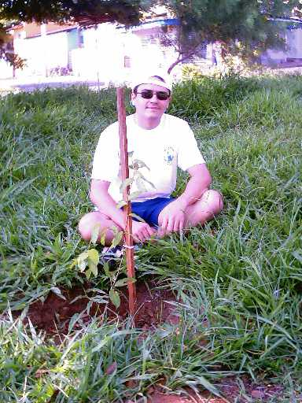
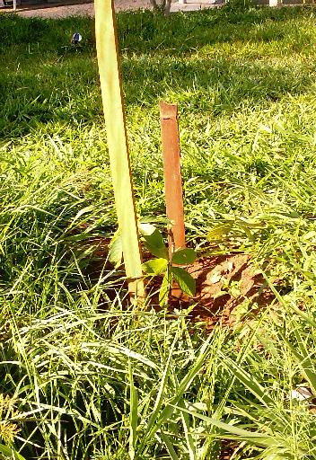
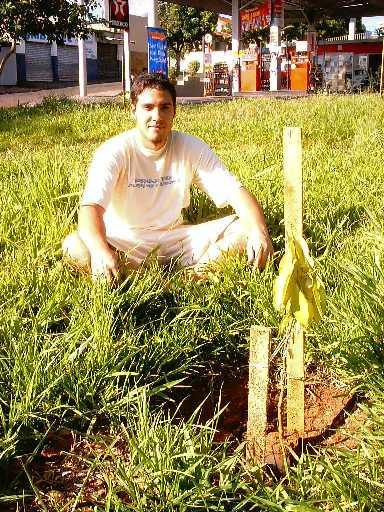

Neste dia,
plantamos mais 3 mudas no Quarteirão H
da Avenida Henrique Gregori:
Este plantio
foi necessário após uma forte chuva, que resultou na queda
de um Tamarindo de
aproximadamente 7 metros, que havia no local.
Onde havia o
Tamarindo, foram plantadas 3 árvores nativas.
Veja as fotos
do plantio:
 |
Alexandre
posa atrás da primeira árvore plantada. |
 |
A segunda
muda é plantada, preenchendo o espaço
antes ocupado pelo Tamarindo.
|
 |
Danilo
posa atrás da terceira árvore plantada. |
As
intempéries também deixam seus resultados na natureza.
Porém, como estamos alertas para
todo tipo de perda, prontamente plantamos 3 árvores
onde se encontrava o antigo
Tamarindo, a fim de preservar o local.
|